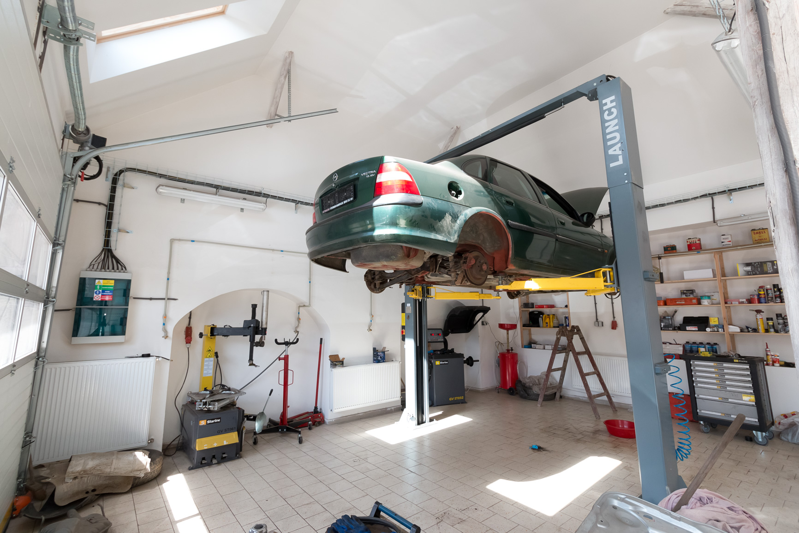
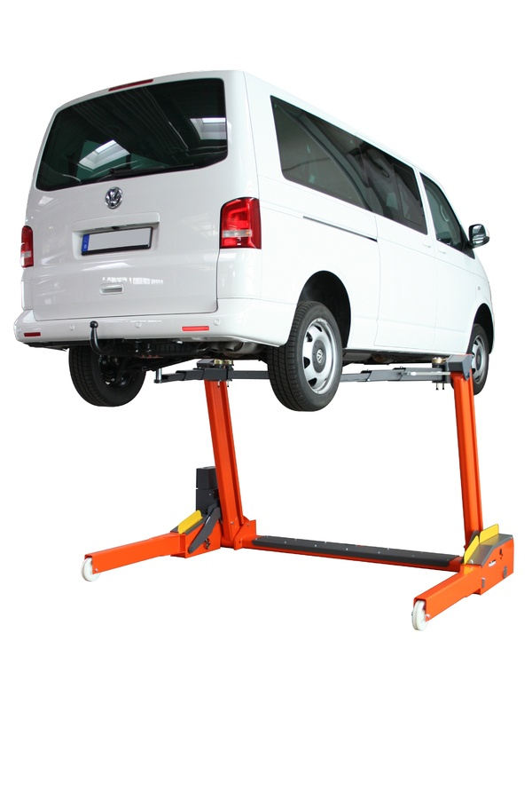
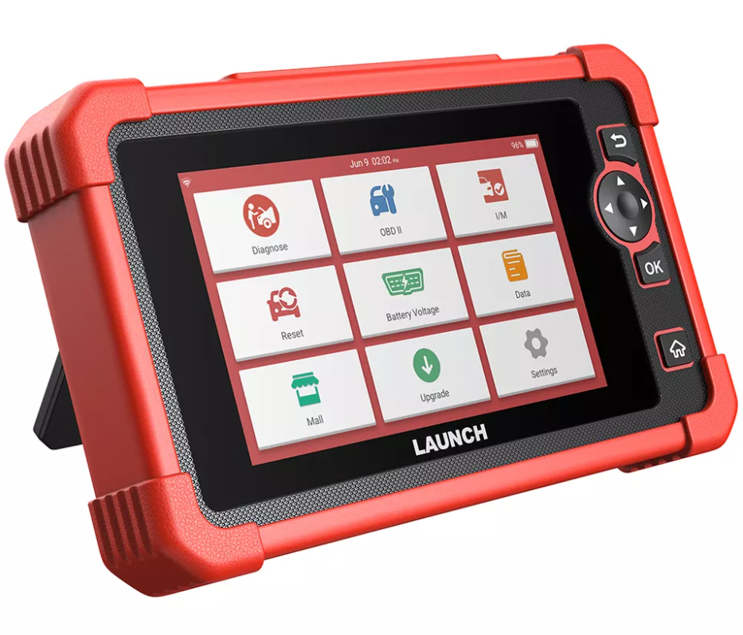

Jsme malý rodinný autoservis a opravujeme osobní auta všech značek už přes deset let. Děláme pravidelný servis, výměny pneumatik, brzdy, podvozek i přípravu na STK.
Pracujeme pro řidiče z okolí, kteří chtějí poctivou opravu za předem domluvenou cenu. Před každou opravou vám řekneme, co je potřeba a kolik to bude stát.
Na práci dáváme záruku a používáme kvalitní náhradní díly. Na servis se můžete objednat i na druhý den.


